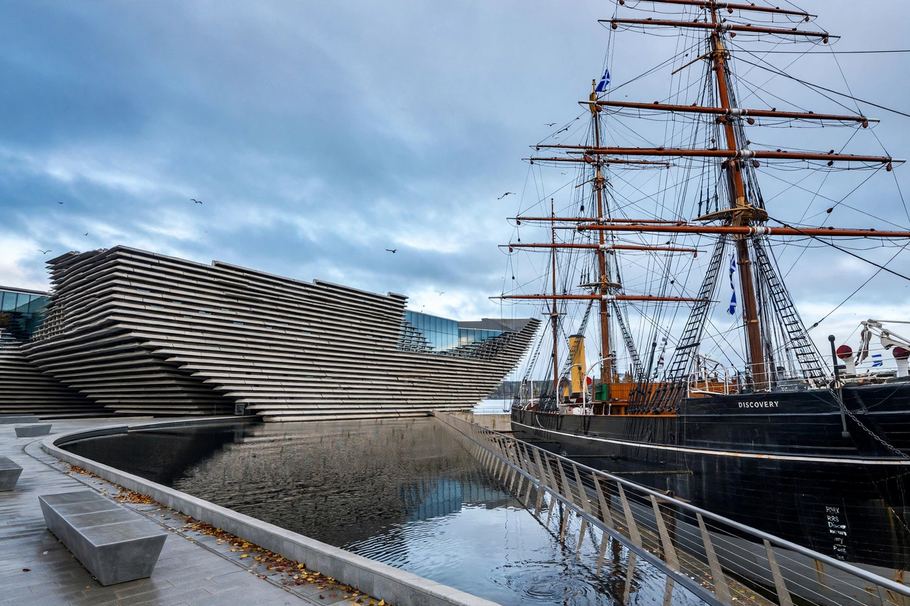

Dundee
From Wikipedia, the free encyclopedia

Dundee is Scotland's fourth-largest city, on the north bank of the River Tay estuary. Historically a whaling and jute-manufacturing port — 'jute, jam and journalism' were its famous three Js — it reinvented itself as a centre of life sciences and video games (it is the birthplace of Grand Theft Auto's creators and home to Abertay University, which launched the world's first computer games degree). The V&A Dundee design museum opened on its regenerated waterfront in 2018.
History
Dundee grew as a medieval burgh and whaling port; in the nineteenth century its jute mills, fed by Bengal fibre and powered substantially by women's labour ('mill girls'), made it the industry's world capital, while marmalade (the Keiller firm) and DC Thomson's comics and newspapers (The Beano, The Dandy) supplied the other Js. The Tay Bridge disaster of 1879, when the first rail bridge collapsed in a storm with a train, remains a byword (and the occasion of McGonagall's famously bad poem).
Modern city
Jute's collapse left deep deprivation, but the city pivoted: the University of Dundee's life-sciences school, Ninewells Hospital, a games cluster, and the £1 billion waterfront regeneration crowned by Kengo Kuma's V&A. The RRS Discovery, built here for Scott and Shackleton's 1901 Antarctic expedition, is berthed at Discovery Point as the emblem of the older, exploring Dundee.